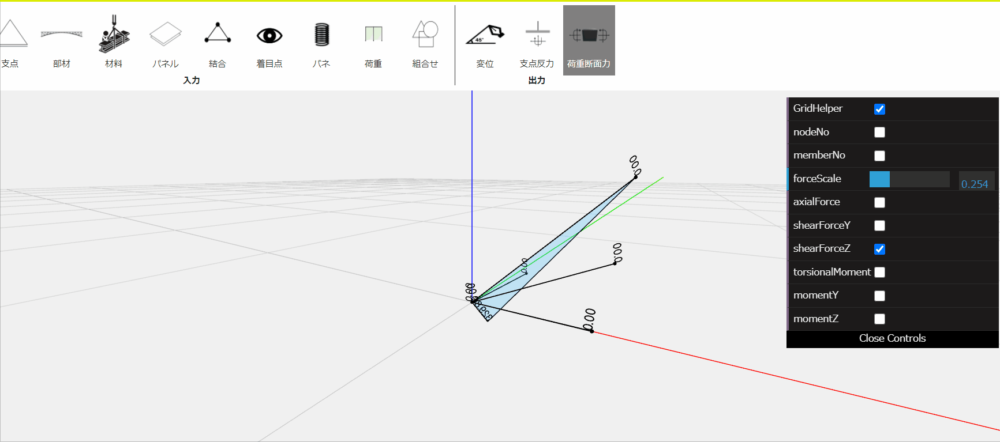

立体骨組応力解析
本プログラムは任意系立体骨組構造物の応力解析を行うプログラムです。

断面性能照査
本プログラムは断面の釣り合い計算および応力度の算定を行うプログラムです。

BOXカルバート
本プログラムはあらかじめ設計した大量の計算結果をAIに学習させることにより適正な寸法を予測するプログラムです。
土木設計の数値計算の数量は膨大です。この数値計算を早く正確かつ速くできれば、仕事量を格段に減らすことができます。
これを実現するのが、数値計算サービス「StructuralEngine」です。
本プログラムは任意系立体骨組構造物の応力解析を行うプログラムです。
本プログラムは断面の釣り合い計算および応力度の算定を行うプログラムです。
本プログラムはあらかじめ設計した大量の計算結果をAIに学習させることにより適正な寸法を予測するプログラムです。
鉄筋コンクリート・鋼・複合混合物において鉄道、港湾などの設計基準に準拠
100% クラウドベースでシームレスに動作します。
パソコン、そしてモバイルタブレットさえ！
ライセンスキーは不要、バージョンの問題やコストのかかるアップデートはもうありません。

柔軟な価格設定、必要な分だけ支払う。
プログラムは非常に直感的で使いやすいです。
ワークフローとユーザーインターフェイスを再設計しました。
入力が簡単で、インターフェースがすっきり、
ラーニングコストが短縮でき、入力にかかる時間が短縮できます。